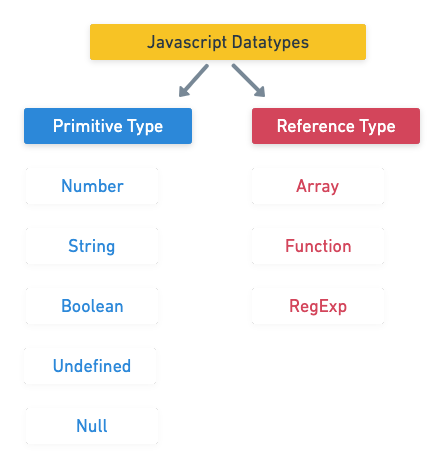

원시타입과 참조타입
자바스크립트에서는 원시타입과 참조타입이 존재한다. 
원시타입
그 자체가 값인 데이터 타입을 말한다.
변수에 접근할 때 해당 변수에 저장된 실제 값을 조작한다.
기본 값의 유형을 확인하려면 typeof연산자를 사용해서 확인할 수 있다.
자바스크립트에서는 배열과 객체 모두 object로 취급한다는 사실을 꼭 잊지말자.
1const typeNumeric = typeof 1; //number
2const typeBoolean = typeof true; //boolean
3const typeString = typeof 'hello'; //string
4const typeFunction = typeof function(){ return;} //function
5const typeUndefined = typeof undefined; //undefined
6
7const typeObject = typeof {}; //object
8const typeArray = typeof ['1']; //object
9const typeNull = typeof null; //object
참조타입
원시 값과는 달리 해당 객체의 참조에 대해서 작업한다.
즉, 참조 값을 재할당하면 원래의 변수에 저장된 값도 새 변수의 위치로 복사된다.
1const fruits = ['apple', 'mango'];
2const newFruits = fruits;
3newFruits.push('banana');
4
5console.log('fruits>>' + fruits); //fruits>> apple,mango,banana
6console.log('newFruits>>' + newFruits); //newFruits>> apple,mango,banana
그럼 객체와 배열을 어떻게 판별할 수 있을까?
배열 판별하기
배열은 isArray()메서드로 배열 타입임을 확인할 수 있다.
1Array.isArray([1, 2, 3]); // true
2Array.isArray({foo: 123}); // false
3Array.isArray('foobar'); // false
4Array.isArray(undefined); // false
객체 판별하기
자바스크립트에서는 객체를 판별하는것이 까다롭다.
유사객체 타입이 많기 때문인데.. null타입과 array타입을 걸러내야 한다.
1console.log(detectObject({})); //true
2console.log(detectObject([])); //false
3console.log(detectObject(null)); //false
4
5function detectObject(value){
6 if(typeof value === 'object' && value !==null && !Array.isArray(value)){
7 return true;
8 }else{
9 return false;
10 }
11}
원시타입 자료형
Number
자바스크립트에서는 정수(int)든, 실수(double, float)이든 실수로 처리한다(모든 숫자는 Number 자료형).
모든 숫자를 64비트 부동 소수점 형태로 저장하기 때문에 typeof 연산자 결과값이 number로 저장된다.
따라서 숫자 계산시 매우 유연하게 계산할 수 있다.
1let numberA = 15;
2let numberB = 15.2;
3numberA + numberB; //30.2
String
자바스크립트에서는 홀따옴표, 쌍따옴표 상관없이 문자를 표현할 수 있다.
(웬만하면 일관성있게 사용하자, 나는 주로 홀따옴표를 선호한다 ㅎㅎ)
concat 메서드등 문자열도 배열에서 제공하는 여러 메서드들을 몇개 쓸 수는 있지만, 연산시 객체로 변환했다가 다시 문자열로 내부적으로 처리된다.
사실 concat보단 +연산자를 주로 쓴다..
1const text = 'abcdefg';
2const message = "hello"!;
3
4text + message; //abcdefghello!
5text.concat(message); //abcdefghello!
null과 undefined
자바스크립트에서 값이 비어있음을 나타내는 자료형이다.
undefined는 할당되지 않은 변수의 초기값이며 변수 자체의 값 또한 undefined 이다.
null을 확인하고자 할 때 typeof의 결과는 object이기 때문에 일치 연산자(===)를 사용해야만 한다.
1var nullChk = null;
2
3console.log(typeof nullChk == null); //false
4console.log(nullChk === null); //true
참조타입 자료형
배열
자바스크립트의 배열은 타 언어의 배열과 비교햇을 때, 좀 더 유연한 성질을 가지고 있다.(이 점을 주의하여야 한다.)
다음과 같은 특징을 가지고 있다.
- 배열의 length는 실제 배열에 존재하는 원소 개수와 일치하는 것은 아니다.
- 배열의 Index는 자유이다, 가장 큰 Index 기준으로 length 값이 늘어난다. (실제 메모리가 늘어나는 것은 아니다.)
- 배열도 객체이므로
for in루프를 사용할 수 있지만, 불필요한 프로퍼티가 출력될 수 있으므로 일반 for문을 사용하는것이 성능적으로도 낫다. - 배열에서
delete()메서드로 요소를 삭제하면 오직 undefined로 초기화만 해준다, 실질적으로 삭제하려면splice()메서드를 사용해야만 한다.
배열 반복문
for
지정한 길이(array.length) 만큼 반복하며 요소에 접근할 수 있다.
1const fruits = ['apple', 'mango'];
2for(let i=0; i<fruits.length; i++){
3 console.log(fruits[i]);
4}
forEach()
배열의 각 요소에 한번씩 callback을 수행한다. (breack 불가)
초기화되지 않은 원소들은 건너뛴다.
배열의 사본을 생성하지 않으므로 참조하고 있는 경우 주의가 필요하다.
1const arr = ['banana', 'kiwi'];
2//일반 함수표현식
3arr.forEach(function(element){
4 console.log(element);
5});
map()
forEach()와 마찬가지로 요소를 순회하면서 표현식을 수행한다.
큰 차이는 계산한 값들을 모아 새 배얄로 반환한다.
성능이 느리긴하지만, 부수효과를 발생시키지 않는다는 장점이 있다.
1// 원소 100개의 배열을 생성하기
2const arr = Array(100).fill().map(function(item, index){
3 return index;
4}); //[0~99]
배열을 생성하므로 변수에 담아 사용할 수 있다. (기존 배열에는 영향을 끼치지 않는다.)
1const fruits = ['apple', 'mango'];
2const newFruits = fruits.map(function(){
3 return 'NEW'+value;
4});
5
유용한 메서드
splice()
배열 내부요소에 대해 제거하거나 제거한 위치에 값을 추가할 수 있다. (원본배열 수정)
return 값은 제거된 요소만 담어서 반환한다. 제거한 요소가 없다면 빈 배열을 반환한다.
1const fruits = ['apple', 'mango'];
2const newFruits = fruits.splice(fruits.length, 0, 'kiwi'); //맨끝에 키위 추가
3const emptyFruits = fruits.splice(0, 1); //0번째 인덱스부터 '1'개 요소 제거
4
5console.log(fruits); //['kiwi', 'banana', 'mango']
6console.log(newFruits); //제거한 요소가 없으므로 빈값 []
7console.log(emptyFruits); //제거한 요소 [apple]
slice()
원본 배열을 해치지 않고 얉은 복사본을 생성해 새 배열로 반환해준다.
1const animals = ['ant', 'bison', 'camel', 'duck', 'elephant'];
2
3console.log(animals.slice(2));
4// expected output: Array ["camel", "duck", "elephant"]
5console.log(animals.slice(2, 4));
6// expected output: Array ["camel", "duck"]
7console.log(animals.slice(1, 5));
8// expected output: Array ["bison", "camel", "duck", "elephant"]
객체
객체는 정적인 정보에 적합하다. (반복, 갱신, 대체가 필요한 정보에는 적합하지 않다.)
자바스크립트에서의 객체는 타 언어와 다르게 여려 type의 프로퍼티들을 담을 수 있다.
객체 생성하기
생성자 방식, 리터럴 방식으로 객체를 생성할 수 있는데 리터럴 방식으로 생성하기를 권고하고 있다. (성능, 안정)
1//생성자 방식
2const fruits = new Object();
3fruits.name = 'grape';
4fruits.price = 3000;
5
6//리터럴 방식
7const fruits2 = {
8 namae : 'grape',
9 price : 3000
10}
대괄호표기법과 마침표표기법
보통 마침표(.)를 이용해서 프로퍼티에 접근 하지만, 특별한 상황에선 배열처럼 대괄호([])를 이용해서 접근해야한다. (프로퍼티명이 표현식이거나 예약어일 경우)
1const userInfo = {
2 name : 'jiny',
3 age : '25',
4 gerder : 'male',
5};
6
7//마침표표기법 (일반 접근)
8const userName = userInfo.name;
9
10//대괄호표기법 (예약어 or 표현식)
11userInfo['favorite-game'] = 'FIFA';
12console.log(userInfo['favorite-game']);
유용한 객체 메서드
Object.keys()
객체의 요소들을 배열로 반환한다.
Object.values()
객체의 프로퍼티 값 (value)를 배열로 반환한다.
1const userProperties = Object.keys(userInfo); //['jiny', 'age', 'gerder']
2const userValues = Object.values(userInfo); //['jiny', '25', 'male']
Object.entries()
객체의 [Key, Value] 형태의 배열로 반환한다.
1const userlist = Object.entries(userInfo( //[["name","jiny"],["age","25"],["gerder","male"]]
객체 사용 시 주의점
객체 또는 배열에서 속성이 제대로 정의되지 않으면 오류를 반환한ㄷ나.
따라서 객체의 속성과 배열의 요소가 정상적으로 포함되어있는지 판단하는 검증이 필요하다.
1const imageInfo_1 = {} //속성이 정의되지 않음
2const imageInfo_2 = {file : []} //배열 개체가 없음
3const imageInfo_3 = {file : ['app.png', 'thumb.jpg']} //정상
4function getImagePath(imageObject){
5 //객체의 속성, 배열 요소 검사
6 if(imageObject.file && imageObject.file.length > 0){
7 //..code
8 return;
9 }else{
10 return [`http://root/image/default.jpg`];
11 }
12}
조건문
자바스크립트에서 판독하는 거짓(false)의 값은 다음과 같다.
- false
- null
- 0
- NaN
- "", ‘'
삼항 연산자
분기를 더욱 단순하게 표현할 수 있다.
1const path = 'img/app.jpg';
2if(path){
3 return path;
4}else{
5 return '';
6}
7
8//삼항 연산자
9return path ? path : '';
OR 연산자
OR 연산자 (||)로 검사한 값 중 하나가 true를 바환하면, 확인한 값을 곧바로 할당할 수 있다.
default값을 할당하기에 더욱 편하다.
1const path = 'img/app.jpg';
2function getImagePath(url){
3 const path = url || 'img/default.jpg';
4 return 'http://root' + path;
5}
6
7console.log(getImagePath(path)); // http://root/img/app.jpg
8console.log(getImagePath()) // http://root/img/default.jpg
참고자료
- 모던웹을 위한 자바스크립트 + JQuery 입문 - 자료형 (윤인성 저)
- 인사이드 자바스크립트 - 데이터 타입과 연산자 (송형주, 고현준 저)